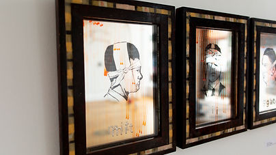
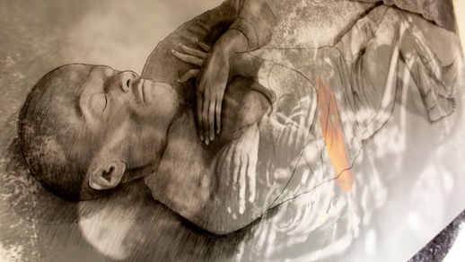
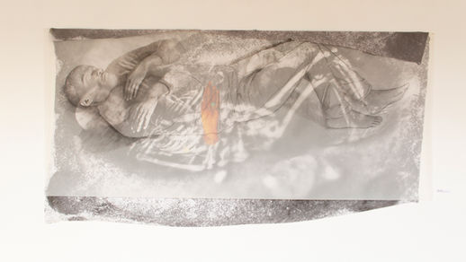

Body Body Body
Artist Talk Saturday, June 16
2018
Dream Farm Commons is a brand new site for art and radical imagination and we hope you will help us make it live. The exhibition Body Body Body is the ribbon cutting launch of what we hope to be an ongoing engagement with the visual, the poetic, the neighborhood and the future and we have begun with the very local – our bodies. Ann Schnake and Stacey Goodman are meshing together their works of paper, wood, hair and rubber; they have additionally invited other artists to join them with images, representations, suggestions and stand-ins for the body and the bodily—from the sketches and impermanent works of tattoo artists from this neighborhood, Cedre Csillagi, Grace Joseph and Darryl Thompson, to the visceral latex print works of Holly McHugh, the finely etched wounded limbs of Sharon Siskin, and the cinematography of Stefanos Lecic Softsi and the physical performances of Maria Softsi. While our first exhibition is very much visual, we hope each project will break whatever mold we make as we investigate the big ideas of radical imagination, and celestial mystery, coupled with local activism and love.
In this lofty endeavor we remember the words of those who came before us: "Love needs force to conquer the ruling powers …Only the standpoint of bodies and their power can challenge the discipline and control wielded by the republic of property" — Negri and Hardt
 